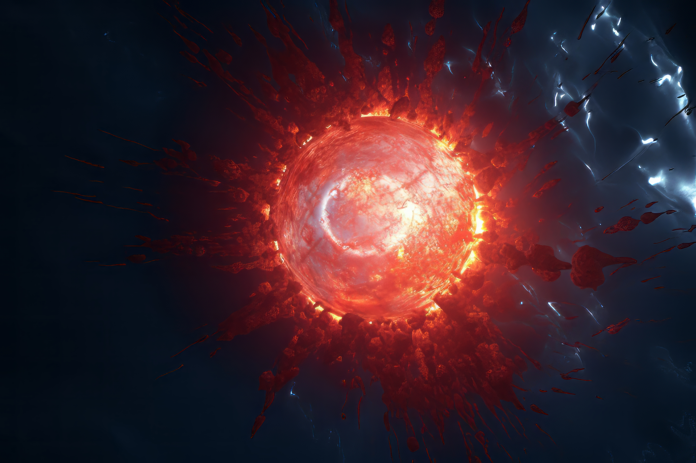
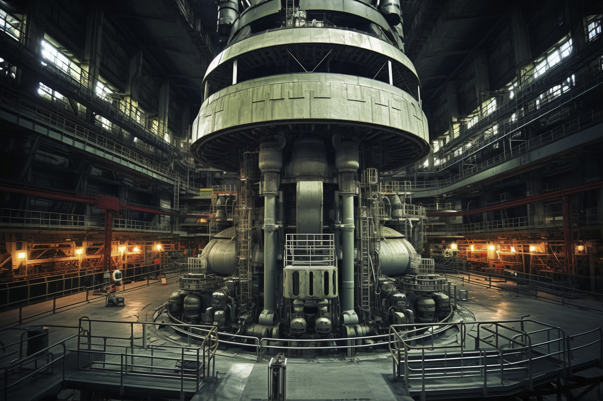
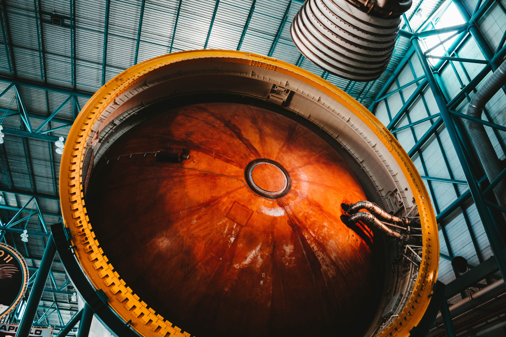
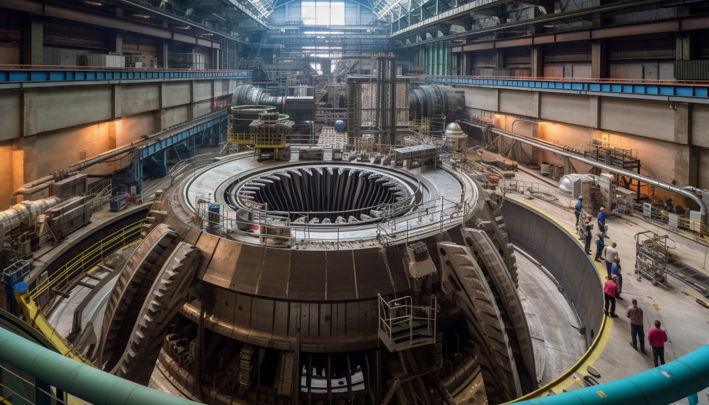
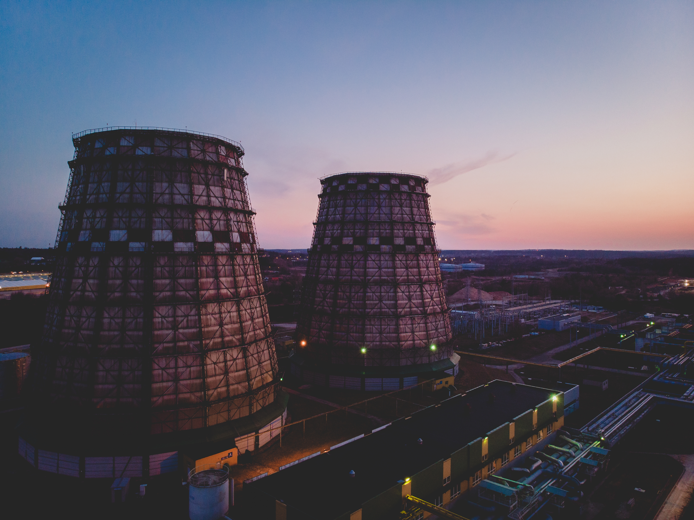
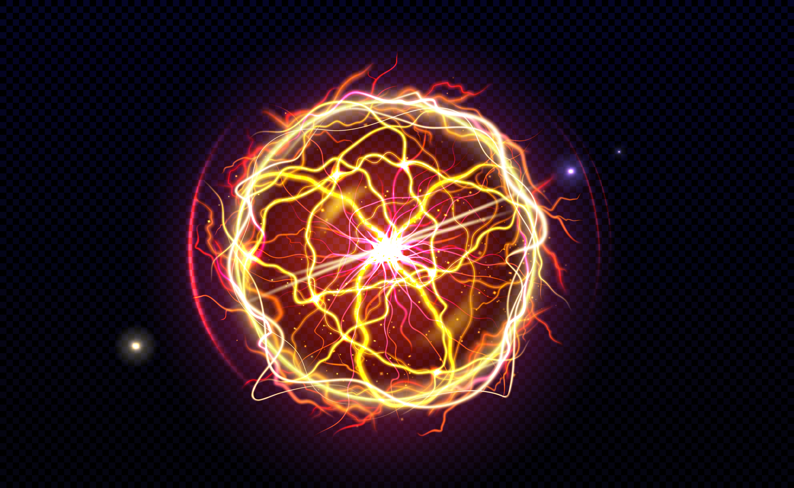

What is Nuclear Fusion?
Nuclear fusion is the process that powers the stars. It happens when two light atomic nuclei, such as hydrogen isotopes, collide and fuse together to form a heavier nucleus, releasing vast amounts of energy. Unlike nuclear fission, which splits atoms, fusion has the potential to provide cleaner and virtually limitless energy.
The Core Challenge: Extreme Conditions
For fusion to occur, nuclei must overcome their natural electrostatic repulsion — the force that pushes positively charged protons apart. This requires:

Extreme Temperatures
Fusion requires heating hydrogen isotopes to millions of degrees Celsius, even hotter than the Sun’s core. At these temperatures, matter becomes plasma, a highly energetic state that is incredibly hard to create and maintain on Earth without overwhelming energy costs.

Immense Pressure
To push atomic nuclei close enough to fuse, you also need tremendous pressure. Without it, the positively charged protons repel each other instead of colliding. Replicating such crushing forces in a controlled environment is one of the greatest challenges scientists face.

Stable Confinement
Even if the plasma is hot and dense enough, it must be held in stable confinement for long enough to sustain reactions. The plasma constantly tries to expand and escape, and if it touches the reactor walls, the reaction collapses instantly. Designing systems that can confine plasma reliably remains a central barrier to usable fusion power.
Replicating these conditions on Earth is extremely difficult. Containing plasma that hot without letting it escape or damage equipment is one of the greatest challenges in modern physics.
Containment Difficulties
Two main approaches exist:

Magnetic confinement (tokamaks and stellarators)
Use powerful magnetic fields to trap plasma.

Inertial confinement (lasers)
Use intense laser beams to compress fuel pellets.
Both methods are still experimental. While progress has been made, none have yet achieved net energy gain — meaning producing more energy than the process consumes.
Energy vs. Input Problem
Currently, every fusion experiment requires more energy to start and sustain the reaction than the amount of energy that comes out. This makes it impractical for commercial electricity generation. Reaching “ignition,” where the reaction sustains itself, has only been achieved briefly and under limited laboratory conditions.
Materials and Engineering Limits
Fusion reactors push materials to their breaking points. Walls must withstand constant bombardment by high-energy particles, intense heat, and radiation. Developing materials that survive long enough for a reactor to operate economically remains a huge hurdle.

Why We’re Still Hopeful
Despite the challenges, fusion research is advancing. Projects like ITER in France, private startups, and breakthroughs in superconducting magnets and laser technology suggest that achieving practical fusion energy may one day be possible. However, experts believe large-scale deployment is still decades away.
Conclusion
We can’t yet achieve nuclear fusion for energy supply because the conditions required - extreme heat, pressure, and stable confinement — remain beyond our current technological reach. While the science is proven in theory, the engineering hurdles are enormous. Fusion remains one of the most ambitious goals in energy research: not impossible, but not here yet.
